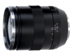

器材库 > 35mm画幅MF定焦镜头 > Apo Sonnar T* 135/2 ZE

详细规格
镜头类型
中远摄/远摄镜头
发布日期
2012-09-07
厂家推荐价格
2,000.00 （美元）
焦距
135mm
最大光圈
f/2.0
最小光圈
f/22
视角（对角）
18.7°
视角（水平）
15.6°
视角（垂直）
10.5°
镜头结构
11片/8组
低/超低色散镜片
4片
光圈叶片
9片
最近对焦距离
80cm
最大放大倍率
0.25
滤镜口径
77mm
镜头卡口
Canon EF
防抖
否
颜色
黑色
尺寸
84x130mm
重量
930g
hoepal2017-10-07 09:254.83 分
操作性 5.00耐用性 5.00性价比 4.00解像力 5.00色彩还原 5.00机械结构 5.00
cybertron2014-12-11 16:524.67 分
操作性 4.50耐用性 4.50性价比 4.00解像力 5.00色彩还原 5.00机械结构 5.00
彩虹战士2014-02-10 14:324.83 分
操作性 4.50耐用性 5.00性价比 4.50解像力 5.00色彩还原 5.00机械结构 5.00
音盲2014-01-22 17:274.75 分
操作性 5.00耐用性 4.50性价比 4.00解像力 5.00色彩还原 5.00机械结构 5.00
雨过初晴2013-06-03 15:264.67 分
操作性 4.50耐用性 4.50性价比 4.50解像力 5.00色彩还原 5.00机械结构 4.50